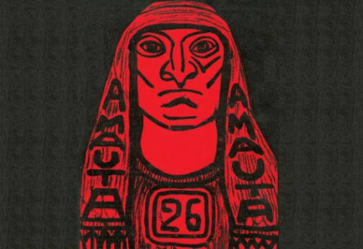
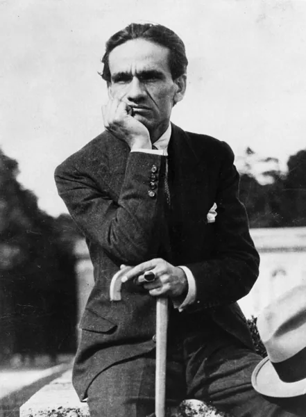
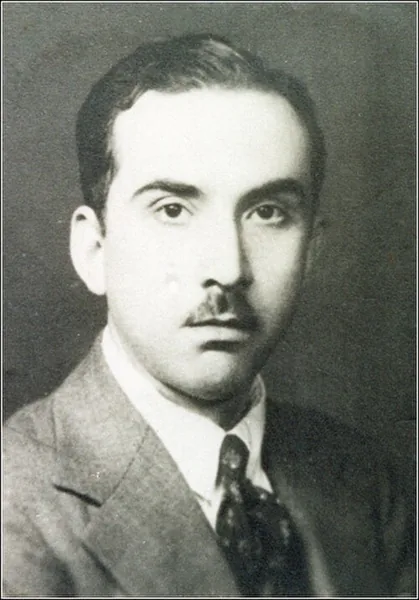
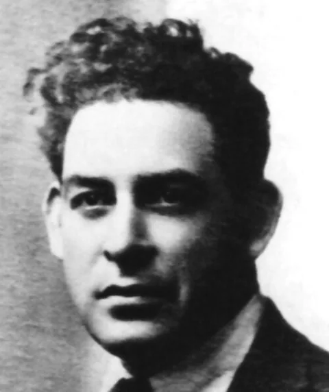
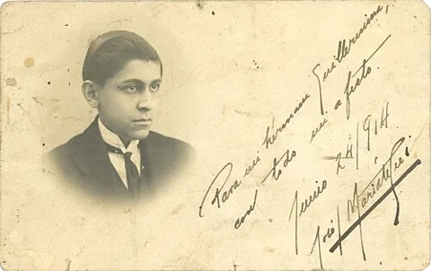

Contexto histórico de Perú (1920–1930)
Perú estuvo gobernado por Augusto B. Leguía durante el Oncenio, de 1919 a 1930. La modernización convivió con desigualdades sociales y conflictos políticos, mientras se discutía el lugar de las culturas indígenas en la vida nacional.
La poesía experimental y el indigenismo siguieron caminos de renovación diferentes. Amauta, fundada por Mariátegui en 1926, reunió debates sobre arte, literatura y sociedad. Las nuevas propuestas dialogaron con corrientes internacionales desde experiencias peruanas.
Línea de tiempo
Continúa el gobierno de Augusto B. Leguía, iniciado en 1919. Conviven proyectos de modernización y desigualdades sociales.
1922: César Vallejo publica Trilce en Lima, obra fundamental de la experimentación poética.
En estos años, Sabogal fortalece sus búsquedas indigenistas y trabaja con imágenes de la cultura andina.
1926: Mariátegui funda Amauta. 1927: la revista es suspendida temporalmente y reaparece en diciembre.
1928: Martín Adán publica La casa de cartón. 1929: la crisis mundial agrava las tensiones del período.
1930: cae Leguía, muere Mariátegui y concluye Amauta, después de 32 números.
Artistas y referentes

en Trilce (1922) transformó el lenguaje poético mediante nuevas palabras, alteraciones sintácticas y asociaciones inesperadas. Su obra explora experiencias humanas como el dolor, la familia y el paso del tiempo.

renovó la prosa con La casa de cartón (1928), un libro de escenas e impresiones vinculadas con Barranco. Su escritura combina observación, imaginación e innovación verbal.

fue una figura central del indigenismo pictórico. Dio protagonismo a personajes, paisajes y tradiciones andinas, y colaboró con el entorno cultural de Amauta.

fundó Amauta en 1926. Como referente intelectual, vinculó las discusiones sobre arte con cuestiones sociales y políticas, y promovió el intercambio entre creadores peruanos e internacionales.
Archivo José Carlos Mariátegui, Lima, Perú · CC BY 4.0Indigenismo
El indigenismo buscó dar centralidad a las poblaciones indígenas y a sus experiencias, frente a una cultura que con frecuencia las relegaba. En las artes visuales, Sabogal representó personajes y ambientes andinos con una intención de afirmación cultural. Sin embargo, representar a una población no equivale a hablar con su propia voz: esta diferencia ayuda a analizar críticamente las obras y los debates del período.
Revista Amauta
Amauta circuló entre 1926 y 1930 bajo el impulso de Mariátegui y reunió arte, literatura, crítica y discusión política. Permitió que propuestas experimentales e indigenistas compartieran un espacio de intercambio. La publicación de adelantos de La casa de cartón muestra su papel en la difusión de nuevos escritores. Su importancia estuvo en conectar la producción cultural con preguntas sobre el presente y el futuro del país.
Identidad peruana
Los debates sobre identidad preguntaban qué experiencias y tradiciones debían reconocerse como parte de Perú. La valoración de lo andino cuestionó miradas centradas exclusivamente en modelos europeos o en las élites urbanas. Las obras de Sabogal y las discusiones de Amauta permiten observar estas búsquedas. La identidad se entiende aquí como una construcción diversa y debatida, no como una cultura única e inmóvil.
Arte y sociedad
La renovación artística modificó tanto las formas de crear como los asuntos que podían discutirse. Trilce amplió las posibilidades del lenguaje para expresar experiencias humanas; el indigenismo volvió visibles sujetos y tradiciones relegados; Amauta relacionó la circulación de obras con el debate social. Estos ejemplos muestran que el arte puede cuestionar una manera de mirar el mundo, sin que todas las obras deban transmitir el mismo mensaje político.
¿Cómo interpretar esta vanguardia hoy?
Compará las ideas de la época con manifestaciones culturales actuales y construí una mirada propia.